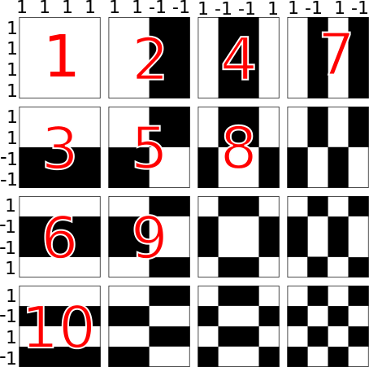
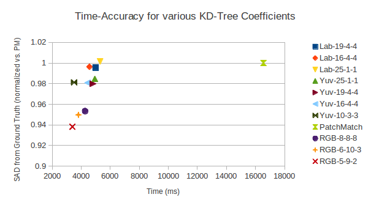
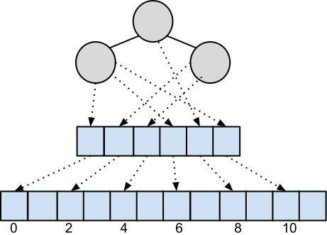

Figure 3: Visual comparison of quantization using various parameters,
scaled 250%
This work describes a propagation-assisted kd-tree, based off the paper Computing Nearest-Neighbor Fields via Propagation-Assisted KD-Trees [3]. For a brief overview of the technique, there is also a poster available. Code for this implementation can be found here.
The kd-tree is a type of space-partitioning binary tree where nodes have tuples of dimension d. The construction is follows that of a standard binary tree – for a value v at axis a (0 ≤ a < d) where v = Tuple[a] : if v ≤ p for some pivot p = Node-tuple[a], send Tuple down the left branch; otherwise Tuple goes right. The construction continues for the next axis at the next level. See Listing 1 a simplified algorithm. Axes need not be sequential (eg, the choice of a at one level does not imply a + 1 at the next level), rather the axis ordering is typically selected to maximize the balance of the tree. Axis ordering is further discussed in Section 1.5. The selection of the pivot p (and by extension, the selection of the node contents Node-tuple) is also extremely important to maintain balance and make tree-building performant. Pivot selection is discussed in Section 1.6. For our purposes, we also follow the lead of [3] and terminate each leaf with at most m = 8 tuples (m is configurable at compile-time).
Querying is likewise similar: at each level, the query and the node’s tuple are compared at the appropriate axis, and branching goes from there.
While this work is very similar to [3], there are several differences:
Testing was done on 126 pairs of JPEGs of the VidPairs data set. Each pair of images is taken publicly available movie trailers, several frames apart. For each pixel in the destination image, patches from the source image are used to determine the nearest neighbor – the best pixel to use for reconstruction. The accuracy of the result is computed by ∑ |Ir − Igt|: taking the SAD of the reconstructed image and the ground-truth best match between the two pairs.
After the WHT operation, the coefficients are in planar order; this must be transformed to an interleaved order (eg, AAABBBCCC → ABCABCABC) before insertion. The 2-D WHT coefficients are selected in approximately sequency (frequency-increasing) order to take advantage of WHT energy compaction in the first few frequencies. This resembles the entropy-coding stage for image and video codecs where transformed coefficients are selected in a zig-zag order (see Figure 1).
After interleaving, the axis ordering for insertion from the d coefficients needs to be determined. To reduce run-time, [3] randomly samples tuples and generates an ordering going from the dimension with the largest spread (difference between min/max values) to the lowest. This random sampling is not implemented here; instead a full traversal is done. While sampling is simple enough to implement, tree balance checks haven’t been implemented, which are necessary in order to verify the sampling. In fact, sampling might be entirely avoidable by simply visiting the coefficients in sequency order, which would further reduce tree-building time. However, this hypothesis still needs to be tested – again, via tree balance checking.

Quickselect is the linear-time median selection algorithm used to find an appropriate pivot value for each inner node as the tree is built. First an initial guess at the median is made (using the median-of-3 method [1]), and partitions elements around that guess, refining the guess at each iteration until convergence. A non-recursive implementation from [2] is used, modified to accommodate d-dimensional tuples, pivoting tuples around a given axis. Another convenient property of the quickselect algorithm is that it approximately sorts numbers around the median, wth values growing closer to the median towards the middle. This helps amortize the cost of repeated sub-selections, which occur on each branch as the tree is built. There is a drawback to the quickselect algorithm – while it will find the median of an unordered list of numbers, if the median is duplicated in the list, there is no guarantee the median will be pivoted around itself. Hence the median could be present in both partitions, leading to much lower query accuracy (and makes it impossible for an image to query itself). One solution (as was implemented here) is to take a second pass over the data and pivot around the median; this algorithm is described in [1] as the Hoare Partition. Quicksort suffers from a similar problem as described in [6], which can be mitigated by using a two-pivot variant. Something similar could be investigated here, which would avoid a second pass over the data.
Proper selection of colorspace and coefficients is important for query accuracy and time spent in tree-building. RGB was found to be faster, more accurate and require fewer coefficients. The question is – why? Non-RGB colorspaces are common for for image processing operations, including nearest-neighbor search ([3], [4]). These colorspaces typically model luminosity separately from the color components (chrominance). Looking at Figure 3, luminosity has a significant impact on perceptual quality, even with minimal chroma information. Since high-frequency coefficients after the WHT tend towards zero, extra low-frequency chroma terms significantly improve the quality of matching in addition to reducing run-time slightly (Figure 1). RGB preserves the original colorspace, with information more equally spread among the its channels, leading to more consistent fluctuations in the transformed signal. An interesting note is the optimal set of coefficients for RGB (2-9-5) mirrors the ratio commonly used in RGB to grayscale conversion.
| Configuration | % of PM | Time (ms) |
| HSV-4-4-16 | 1.270 | 4101 |
| Yuv-25-1-1 | 0.984 | 4939 |
| Lab-19-4-4 | 0.995 | 4990 |
| Lab-16-4-4 | 0.996 | 4569 |
| Lab-25-1-1 | 1.001 | 5301 |
| Yuv-19-4-4 | 0.979 | 4812 |
| Yuv-16-4-4 | 0.980 | 4435 |
| Yuv-10-3-3 | 0.981 | 3505 |
| RGB-8-8-8 | 0.953 | 4268 |
| RGB-5-9-2 | 0.949 | 3399 |
| PatchMatch | 1.000 | 16544 |

To emphasize how perceptually compressed non-RGB color spaces are: Figure 3 compares a portion of the Lena image by doing a 8x8 non-overlapping WHT, quantizing each color channel to the specified number of coefficients (using the method of 1.5), then taking the inverse WHT. Figure 3a retains the most detail with just one coefficient for UV. The only visible degradation compared to Figure 3b is some minor chromatic aberration along the diagonal edge, and a slightly duller color overall. On the other hand, the 24 coefficients of 3c noticeably degrade the image – even though information is distributed more evenly among RGB color channels, which should minimize the impact of quantizing any one channel. This is even more apparent in the 16-coefficient case of Figure 3d. Strikingly, while Figure 3 is arranged in order of decreasing visual quality, reconstruction quality is increasing, with 3d providing by far the best parameterization for kd-tree matching (see Table 1).
Note in Figure 4 there are two distinct groups of images as observed by the running time; for the kd-tree, there is a group around 3000ms and another around 4500ms, while PatchMatch has groups around 14000ms and 20000ms. This is due to variations in the data set; a few pairs of images in VidPairs are 1920x800 while most are 1920x1080, effectively a 35% increase in pixel count. Figure 5 shows the visual results of reconstruction for the propagation-assisted kd-tree, PatchMatch, and the ground truth best match. Both Figures 5a and 5b exhibit characteristic ringing around the edges, although PatchMatch’s is more pronounced due to how it propagates adjacent pixels. Since this implementation of the kd-tree propagates PA(x − 1,y) (or PA(x,y − 1)) rather than PA(x,y), there is visible banding around areas that are both uniform in color, and difficult to match (usually due to few approximations of that color in the source image). This occurs due to PB(x,y) ’borrowing’ patches from previously matched neighbors. This is plainly visible in the background, where PatchMatch also has difficulty.
Tuples are stored in memory in raster order, and a separate array of pointers is built that points to the beginning of each tuple. The pointers are partitioned during tree-building; pointer swapping is much faster than swapping blocks of memory. Moreover, this method reduces the cache footprint of a single node (which only has to maintain pointers to its m tuples). This also has the result of speeding up tree traversal (and querying), although the final determination of the best candidate is a bit slower due to the need to access a different region of memory for each tuple in a leaf. This indirction reduces tree-building time by up to 18%.

While indirection makes queries against the tree a bit slower (at the final step; when finding the exact best match among m candidates), its impact during propagation is minimized by using previously found top and left tuples as a ”guide” rather than checking against the m tuples in the node containing them. Hence, only a single row of pointers is needed as a history to track previous matches, with the current position in the history (position x) indicating the top (prior to being overwritten by the best match for the current query), and the left at position x − 1.
By storing a pointer to the beginning of the tuple array, the exact coordinates of a tuple in the source image can be calculated given its offset from the beginning of all tuples. This can be given by:
Calculating the original (x,y) coordinates of the tuple is primarily useful for determining its location in the source image. This information is used to reconstruct the target image using the pixel value at (x,y). Internally, a map also exists that points to the containing node for each (x,y) position. The map is assigned during tree-building, and can be used as an index into the tree (or node) during propagation, but is currently unused.
Since GCK zero-pads data, we only use patches that fall within the image; so we end up with (width - 8 + 1)*(height - 8 + 1) patches. This leads to reconstruction artifacts along bottom-right borders, which are ignored during error calculation.
[1] Thomas H. Cormen, Clifford Stein, Ronald L. Rivest, and Charles E. Leiserson. Introduction to Algorithms. McGraw-Hill Higher Education, 2nd edition, 2001.
[2] Nicolas Devillard. Fast Median Search: an ANSI C Implementation. http://ndevilla.free.fr/median/median/index.html, July 1998.
[3] Kaiming He and Jian Sun. Computing nearest-neighbor fields via propagation-assisted kd-trees. In CVPR, pages 111–118. IEEE, 2012.
[4] Simon Korman and Shai Avidan. Coherency sensitive hashing. In Computer Vision (ICCV), 2011 IEEE International Conference on, pages 1607–1614, November 2011.
[5] Simon Korman and Shai Avidan. VidPairs data set. http://www.eng.tau.ac.il/~simonk/CSH/, November 2011.
[6] Robert Sedgewick and Kevin Wayne. Algorithms, 4th Edition. Addison-Wesley, 2011.